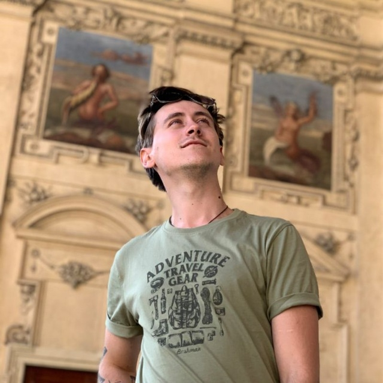

Я родился в 1997 году в городе Запорожье.
Учился в Днепре, полтора года работал в Киеве.
Путешествовал по горам Карпат и Крыма.
До войны успел побывать в Чехии.
Сейчас проживаю и работаю уже 4 год в Польше.
В свободное время увлекаюсь разработкой игр и пиксель артом.
Моя дебютная короткая игра для джема: https://pixel-wanderer.itch.io/ghost-friend-forever
Мои фотографии: Ссылка на страницу два
Мои контакты: Ссылка на страницу три